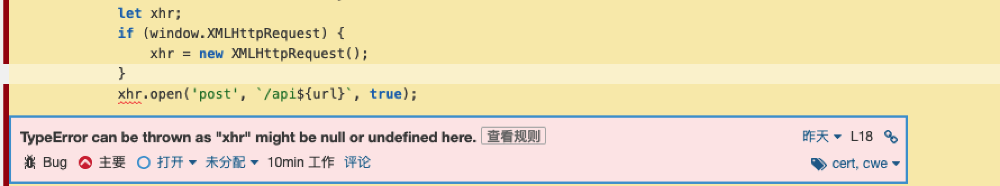
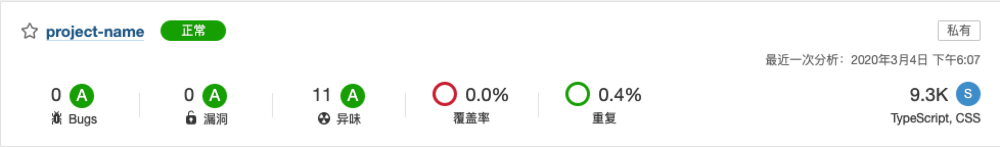
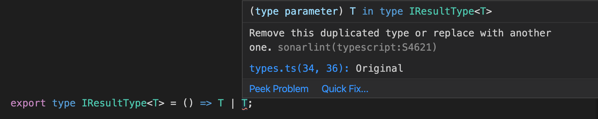
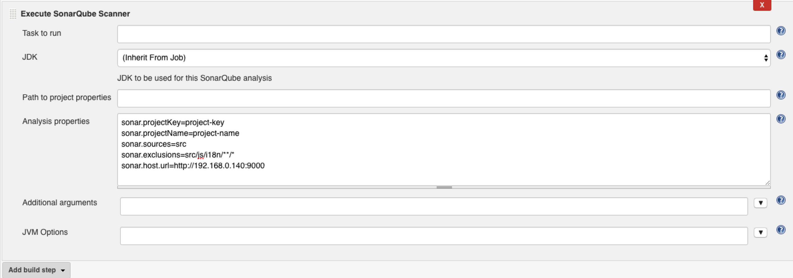

前两天有位同事发给我了两张 SonarQube 代码质量扫描的截图，能够看出 SonarQube 还是能帮我们发现不少问题的。

下面我们介绍三种使用 SonarQube 静态扫描代码质量的方法
通过 SonarScanner 手动扫描代码
下面就是我的操作步骤，我使用的是 macOS 系统，如果你使用的是其他系统，以下步骤未必适用于你，请酌情参考。
- 到官网去下载 SonarScanner 的最新版本。
解压缩第一步下载的 zip 文件，并移动移动你喜欢的目录中，我使用的目录是
/user/local。1
2
3
4# 解压缩，在macOS上也可以双击文件来解压缩
unzip sonar-scanner-4.2.0.1873-macosx.zip
# 移动到相应目录中
sudo mv sonar-scanner-4.2.0.1873-macosx /user/local修改
~/.bash_profile文件，把sonar-scanner命令添加为全局命令。1
2
3
4
5# 打开 bash 配置文件
vi ~/.bash_profile
# 添加以下代码，如果你的 SonarScanner 版本或目录和我不一样，记得修改一下
export SONAR_SCANNER=/usr/local/sonar-scanner-4.2.0.1873-macosx
export PATH=$M2:$PATH:$SONAR_SCANNER/bin让上一步的修改生效
1
source ~/.bash_profile
到此为止，我们已经安装好了，在终端里执行命令
sonar-scanner会出现如下信息，1
2
3
4
5
6
7
8
9
10
11
12
13
14
15INFO: Scanner configuration file: /usr/local/sonar-scanner-4.2.0.1873-macosx/conf/sonar-scanner.properties
INFO: Project root configuration file: NONE
INFO: SonarQube Scanner 4.2.0.1873
INFO: Java 11.0.3 AdoptOpenJDK (64-bit)
INFO: Mac OS X 10.15 x86_64
INFO: User cache: /Users/gaiaworks/.sonar/cache
ERROR: SonarQube server [http://localhost:9000] can not be reached
INFO: ------------------------------------------------------------------------
INFO: EXECUTION FAILURE
INFO: ------------------------------------------------------------------------
INFO: Total time: 0.551s
INFO: Final Memory: 2M/17M
INFO: ------------------------------------------------------------------------
ERROR: Error during SonarQube Scanner execution
org.sonarsource.scanner.api.internal.ScannerException: Unable to execute SonarQube从以上信息的第一行可以看出，该命令从
/usr/local/sonar-scanner-4.2.0.1873-macosx/conf/sonar-scanner.properties读取配置信息，从第二行可以看出当前项目根目录下没有配置文件，因此使用了默认 SonarQube 服务器地址：http://localhost:9000，但是访问不了。因此接下来我们还要修改配置了。假如我们的 SonarQube 服务器是
http://192.168.0.140:9000，首先我们登入生成令牌（token），这样进行代码扫描时，就不用输入用户名和密码，更加安全。我们可以给每一种用途分别生成一个令牌，令牌也可以随时收回。打开http://192.168.0.140:9000/account/security/生成令牌。令牌只在生成成时显示一次。如果不慎遗失也没关系，收回并重新生成一个即可。假如我们生成的 token 是
df32aaf19ee1cdc5117aba235309492fd283e64f，我们来修改 SonarScanner 的配置文件。1
2# 打开配置文件
vi /usr/local/sonar-scanner-4.2.0.1873-macosx/conf/sonar-scanner.properties添加以下内容
1
2
3sonar.host.url=http://192.168.0.140:9000
sonar.login=df32aaf19ee1cdc5117aba235309492fd283e64f
sonar.sourceEncoding=UTF-8在项目根目录下创建 SonarQube 项目配置文件
sonar-project.properties，并填写以下内容：1
2
3
4sonar.projectKey=project-key
sonar.projectName=project-name
sonar.sources=src
sonar.exclusions=src/js/i18n/**/*其中
sonar.projectKey是项目的标识符，可以包含字母、数字、中划线-、下划线_、冒号:，并且不能全是数字。一旦修改了就被认为是一个新项目，就会导致项目的扫描历史丢失，所以开始时就要考虑清楚。建议在一个公司或团队中使用统一的命名规范。根据笔者经验不建议在 projectKey 中使用团队或部门代码，因为很多公司的组织架构不断地调整。sonar.projectName是用来给人阅读的，可以是中文，建议使用大家一看就明白的名称。sonar.sources指定代码目录，如果多个用都好分隔。sonar.exclusions指定一些不扫描的目录，比如在上面的配置中，排除了一些文案相关的文件。
其他参数可以参考官方文档。至此配置完毕，在项目根目录下执行命令
sonar-scanner可以看到EXECUTION SUCCESS的字样，就说明执行成功了。在项目根目录下可以看到一个新目录.scannerwork，这个目录不要提交到代码仓中，记得在.gitignore文件中加上该目录名称哦。打开 SonarQube 服务器就可以看到如下信息，点击项目名称即可查看详细信息。

通过 VS Code 插件即时扫描代码
通过 VS Code 插件，可以让我们在编写代码的时候就能发现问题，避免有问题的代码进入代码仓库。大家都知道，问题发现的越早，解决的越早，成本越低，因此这种做法非常有意义，让问题在刚刚出现时就被发现，被解决。
在 VS Code 中按下
Command + Shift + X组合键或在点击左侧的 Extensions 图标即可打开插件面板，搜索SonarLint即可看到同名的插件，按下其右下角的安装按钮，就安装成功了。在 VS Code 中按下
Command + ,组合键或通过菜单Code -> Preferences -> Settings打开用户设置面板。在用户设置面板中搜索
SonarLint发现若干条配置项，点击任意一个“Edit in settings.json”直接修改 JSON 格式的配置文件。
在新打开的
settings.json文件中添加以下代码，1
2
3
4
5
6
7
8{
"sonarlint.connectedMode.connections.sonarqube": [
{
"serverUrl": "http://192.168.0.140:9000",
"token": "df32aaf19ee1cdc5117aba235309492fd283e64f"
}
]
}其中
serverUrl就是前面提到的 SonarQube 服务器地址，而token就是我们申请的令牌。打开项目根目录下的
.vscode/settings.json文件，如果没有则新建一个文件。在文件中添加以下内容：1
2
3
4
5{
"sonarlint.connectedMode.project": {
"projectKey": "project-key"
}
}这样在编写代码时就可以及时获取 SonarQube 的扫描结果了。

从SonarLint给出的信息看出类型 T 重复，原来是我忘记加上一对括号了。修改如下后就不再提示错误了。1
export type IResultType<T> = (() => T) | T;
通过 jenkins 插件持续扫描代码
以上两种方法主要是开发人员自己扫描和查看，扫描频率和效果完全依赖于开发人员，如果开发人员忙起来忘记了，或故意忽略了编辑器插件给出的提示，或者通过配置项仅仅扫描了部分代码，效果就大打折扣，那么有没有一种方法能够持续地完整地扫描整个代码仓库吗？答案是有的，那就是咱们这回要讲的，通过 jenkins 等持续集成工具来持续扫描代码。
由 jenkins 管理员打开插件管理页面
<jenkins-domain>/pluginManager/，安装SonarQube Scanner插件，因为我已经安装了一段时间了，并且有了新版本，所以截图中SonarQube Scanner出现在Updates面板中，首次安装请在Available中搜索。
由 jenkins 管理员打开全局工具配置页面
<jenkins-domain>/configureTools/，配置如下：
- 由 jenkins 管理员打开全局凭证创建页面
<jenkins-domain>/credentials/store/system/domain/_/newCredentials，创建一个Secret text类型的凭证，把前面申请的令牌写在Secret字段里。 打开项目配置页面，点击“Add build step”，并选择“Execute SonarQube Scanner”，并填写如下
点击“立即构建”就可以在持续集成的过程顺便扫描代码质量了，构建完成以后，点击“立即构建”下方的“SonarQube”就可以跳转到 SonarQube 服务器上该项目看板页面了。
至此我们就介绍完了使用 SonarQube 进行代码扫描的三种方法了，你更喜欢哪一种呢？欢迎评论。